Jeffrey "J.D." Lowe has been writing applications for various companies using JavaScript and HTML5 since 2008. These are some examples of the applications. If you have any further questions, you can reach J.D. at jdlowe.dev@gmail.com.
This is a prototype of a tool to be used to change the images on the screen where customers place their orders. This was written in Javascript, HTML5, and node-webkit.
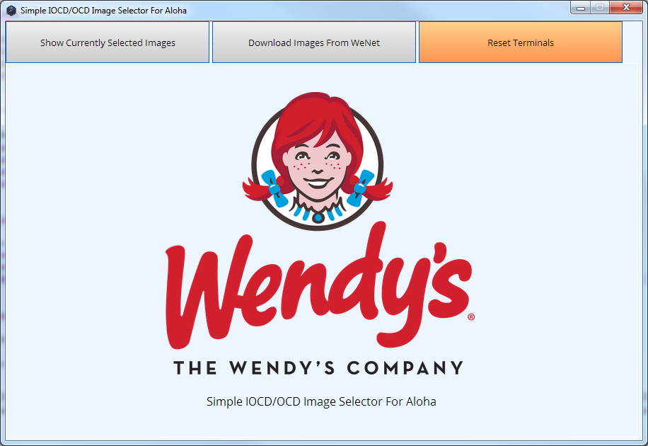
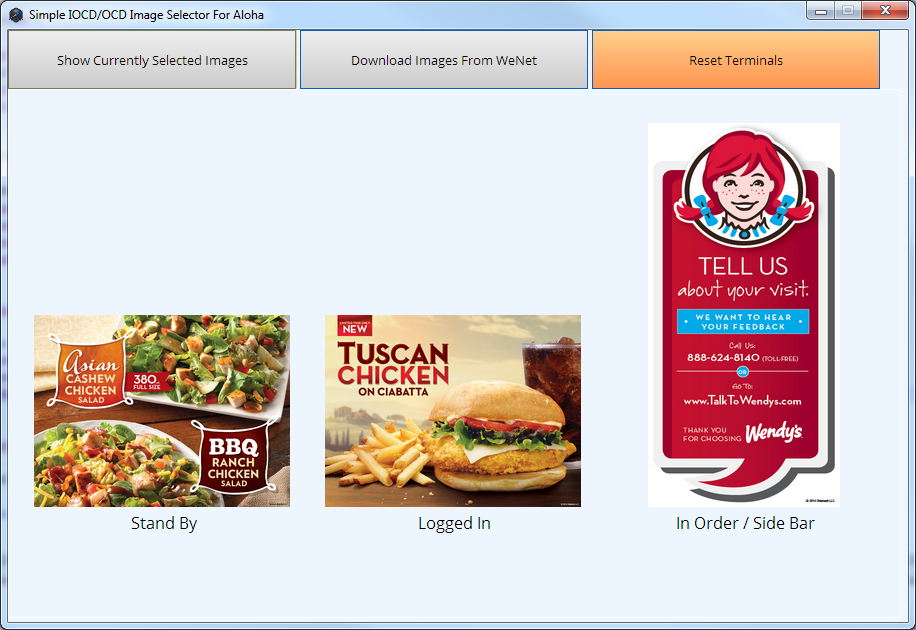
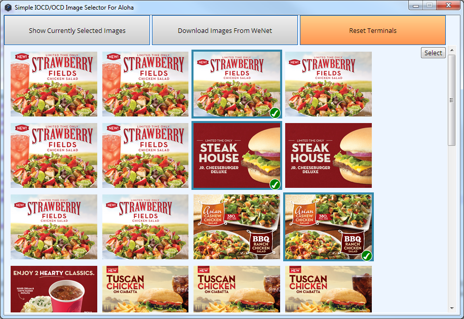
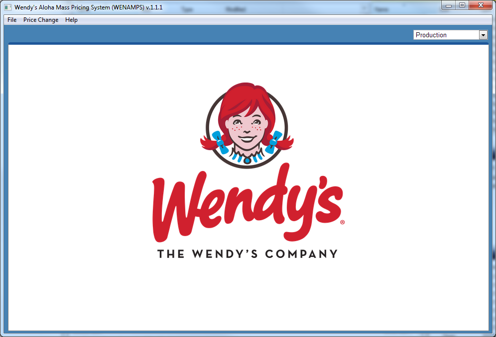
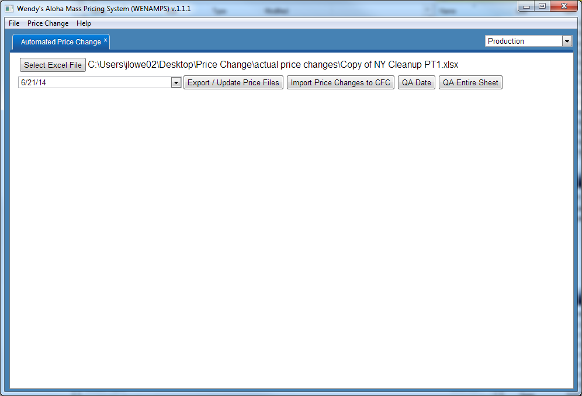
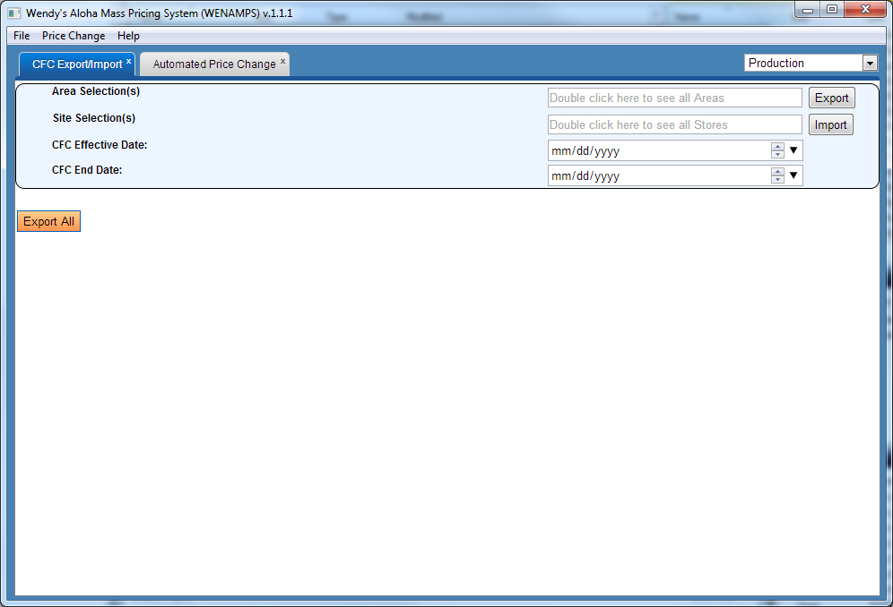
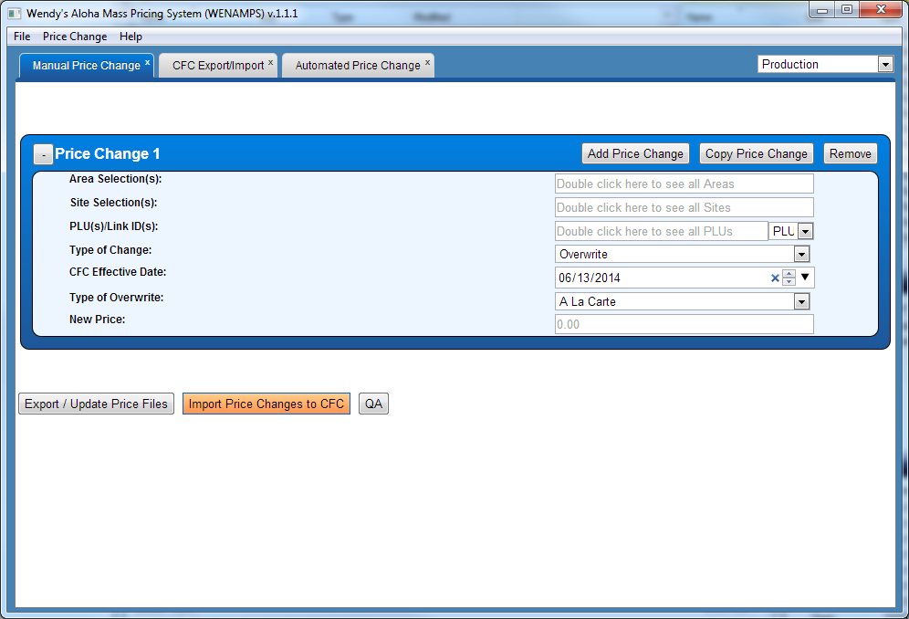
Partial source code available at https://github.com/jdllama/Sorcery
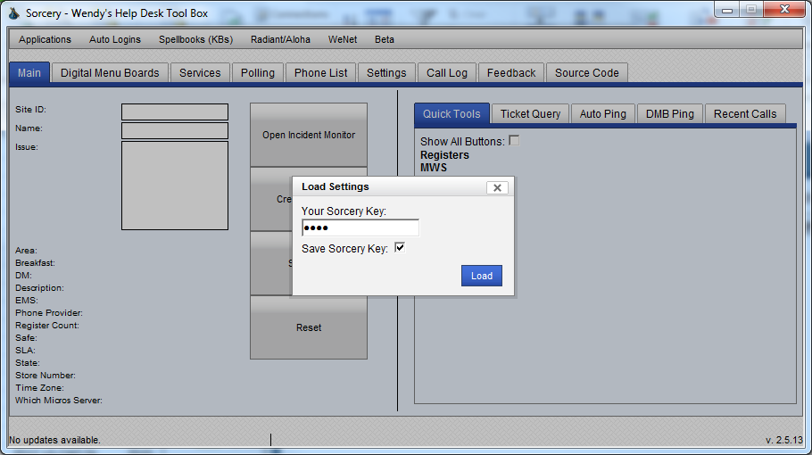
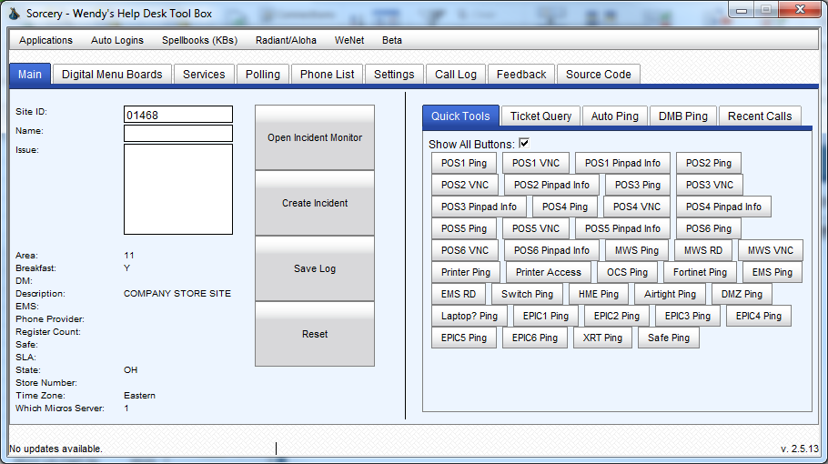
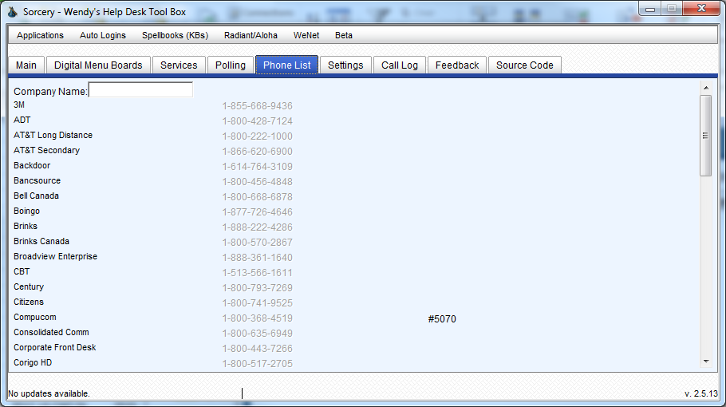
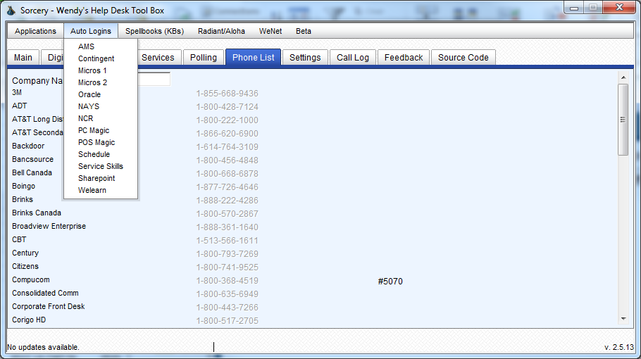
Source code available at https://github.com/jdllama/Hypersplode
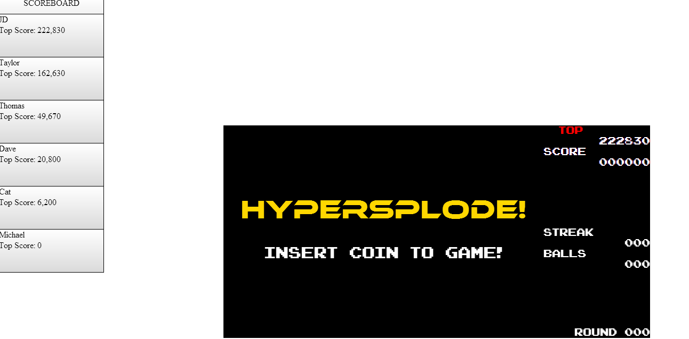
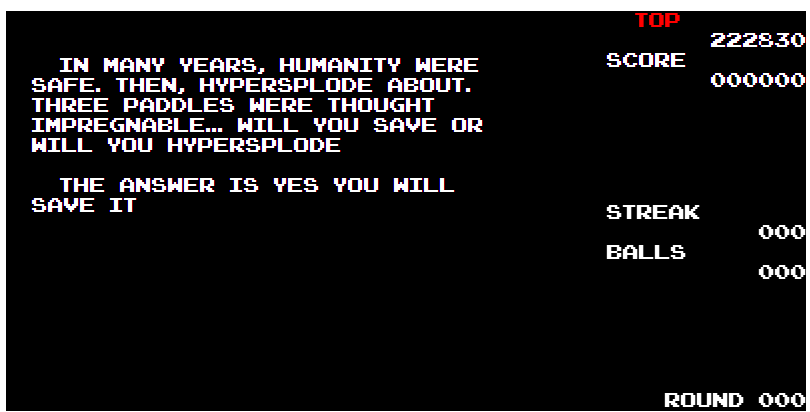
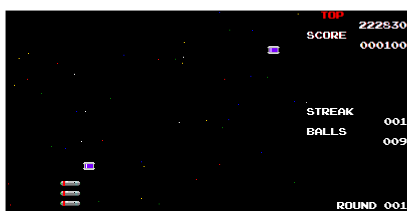